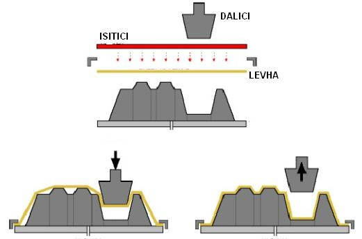

|
5.2 Diþi Kalýpla Vakumlu Biçimlendirme
Diþi kalýbýn yan yüzeylerinde mümkün olduðu kadar az bir koniklik bulunmalýdýr. Yan yüzleri düz olan bir diþi kalýptan, bir parçanýn çýkarýlmasýnda güçlükle karþýlaþýlmamasýna raðmen bu durum parçanýn fazla incelmesine sebep olur. Bütün diþi kalýplar tamamen hava geçirmez olmalýdýr Diþi kalýpla vakum üreteci arasýnda ve plastik ile diþi kalýp arasýnda iyi bir sýzdýrmazlýk saðlanmalýdýr. Bir vakum odasý diþi kalýbýn altýnda bulunmalýdýr . Böylece bütün vakum delikleri vakum üreteci ile baðlanmýþ olacaktýr (1).
Diþi kalýbýn iç kýsmýndaki havayý boþaltmak için, kalýbýn içine vakum boþaltma delikleri açýlmalýdýr. Bu delikler, kalýp biçimi içinde plastiðin hareket edeceði en son kýsmýna yerleþtirilmiþ olmalýdýr. Bunlar genellikle derin basmalar için iç taraftaki köþelerde, kenar ve oluklarda açýlýr. Büyük düz alanlarda arada kalacak havanýn yapacaðý kabartmalarý önlemek için bazý delikler açýlýr. Boþaltma deliklerinin çapý, biçimlendirilecek plastik kalýnlýðýnýn yarýsýndan daha fazla olmamalýdýr; aksi halde plastik yüzünde muhtemelen fazla çizgiler meydana gelir. Deliklerin sayýsý ve nereye açýlacaðý hakkýnda karar verirken çoðunlukla tecrübeden yararlanýlýr (5).
7.1.3 Yardýmcý Dalýcý Ýle Vakumlu Biçimlendirme
Derinliði fazla olan yerlerde yardýmcý dalýcý yöntemi kullanýlýr. Bu yöntemle birlikte yüzey kalýnlýklarý iyi derece de ayarlanabilir. Ýki aþamada derin çekme iþlemi yapýldýðý için levha üzerinde kýrýþma olmaz (5).

Þekil-3 Yardýmcý Dalýcý (5).
SONUÇ:
Vakum kalýplarý geliþmekte olan teknolojiyle beraber ülkemizde büyük bir alana hitap eder duruma gelmiþtir. Özellikle gýda sektöründe, plastik bardak, yoðurt kaplarýnýn üretiminde kullanýlmaktadýr. Vakum kalýplama yönteminin maliyetinin az olmasý bu yöntemin kullanýlýþlýlýðýný arttýrmýþtýr. Kendi sektöründe büyük bir geliþme saðlamýþtýr.
Vakum kalýplama yöntemi, kullanýlan diðer kalýplama yöntemlerinin yetersizliði ve maliyetlerinin fazla olmasý nedeniyle, saðladýðý kolaylýk ve avantajlar açýsýndan öne geçmiþ bulunmaktadýr.
Ambalajlama sektörünün geliþmesiyle beraber vakum kalýplama ile üretilmiþ parçalarýn kullanýmý daha da artmýþtýr. Bu yöntemle üretim kapasitesinde büyük bir artýþ saðlanmýþtýr ve kalýp ömrü uzun olduðu için plastik iþleme yöntemlerinin en çok kullanýlan bir biçimidir.
Vakum kalýplama yöntemi saðladýðý yararlar ile geleceðe dönük AR-GE çalýþmalarýnda ambalaj sektörü için büyük bir paya sahip olacaktýr.
KAYNAKLAR:
1. ERÝÞKÝN Yakup / UZUN Ýbrahim , Hacim Kalýpçýlýðý M.E.B. Yayýnevi , Ýstanbul / 1984 (Sayfa : 120 - 124)
2. SARI Hüseyin, TARIMCI Çelik, Vakum Tekniði, Seçkin Yayýnevi, Ankara / 2006 (Sayfa : 1-50)
3. UYANIK Nurseli / SAVAÞÇI Tunç / AKOVALI Güneri, Plastikler ve Plastik Teknolojisi, PAGEV Yayýnevi (Sayfa: 196-248)
4. www.formech.com/education_vacform_process.php > Formech guide to the basic principles of the vacuum forming process
5. GÝRGÝN Ahmet, Girginler Plastik Kalýp Ve Makine Ýmalat San. Tic. Ltd. Þti. Ýstanbul, www.girginler.com.tr
6. www.luciteinternational.com > Lucite International
Ýlgili rapor/makale:
Vakum
kalýplama:
Erol Büker, Gazi Üniv. T.E.F. Makine Eð. Böl. Kalýpçýlýk
A.B.D., Mayýs 2005, Ankara
|